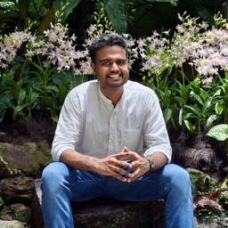

Santhisenan Ajith
I am a PhD student at Nanyang Technological University, Singapore, advised by Jagath Rajapakse and Bernett Lee, working on machine learning for single-cell and spatial transcriptomics. My research focuses on representation learning, graph neural networks, and foundation models for computational biology.
Writing
I occasionally write about machine learning, computational biology, and research.
View blogNews
- Aug 2025Started PhD at NTU